The white paper · 23 September 2026 · internal draft for the business owner
Five pillars. Measured evidence, the questions it answers, and the limits stated in full.
What Universe is. A way of giving a distributor or a dealer tools that are worth opening, in exchange for the parts and aftersales context that makes the next answer sharper. The tools are not the point. The exchange is.
Why it needs doing now. ISZE has asked its distributors for information for years and has not returned enough visible value to keep the request alive. A reporting obligation can start an exchange. Only a useful tool continues one. The 2025 arrangement that tied a share of the normal distributor rebate to a major performance submission is the floor, not the mechanism.
The five pillars, and what each is for. The five are AIM, the Aftermarket Intelligence Model that holds the parts classification; IDS, Isuzu Dealer Standards, the dealer self-assessment; PRISM, the analytics codebase behind the market and fleet calculations; DLOD, Don't Lose the Deal, Isuzu Truck UK's competitive-quotation support programme; and Tenders, the public opportunity feed. Each is expanded again where its own chapter opens, and all of them are in the glossary in chapter 14.
| Pillar | The question it answers | The strongest thing behind it |
|---|---|---|
| AIM — the parts classification | What is really changing in my parts business, and which references explain it? | Isuzu Truck UK brake pads: €347,389.58 billed in calendar 2024, €302,366.25 in 2025, down 13.0%, while recorded quantity fell 25.4%. The whole argument on one figure. |
| IDS — the dealer self-assessment | What did the dealer record about itself, and has anything moved? | 519 dealer records across 19 country lists, of which 334 carry a score, average 77.5. Two thirds of the known estate already holds something a dealer wants to see. |
| PRISM — market and fleet context | Where should we concentrate effort, and is the evidence strong enough to act on? | €55,359,060 of modelled target spend against €32,381,311.55 of parts billed, of which €22,278,000 — 40.24% — sits on a flat €250-per-truck placeholder. |
| DLOD — Don't Lose the Deal | When we pay to defend a job, did we keep it — and can we afford this in every market? | The programme is real and its money is in the ledger. The reason it cannot be judged is one dropped field: the programme name survives in the raw billing extracts and is lost in the derived file, while zero cases are recorded anywhere. |
| Tenders | Which open opportunities are worth pursuing, with what support, and who owns the next step? | 689 notices → 619 opportunities → 199 in the action queue → 45 due within fourteen days → 0 recorded outcomes. |
The recommendation. Three things, and each is small on purpose.
| Decision | Recommendation | What has to be true first |
|---|---|---|
| Fund campaign support | €60,000 to €90,000 inside the existing €100,000 planning route, with a minimum qualifying campaign size of €150,000 of eligible billing | The campaign-selection rule is agreed and the first eligible campaign is named |
| Approach ten dealers | Yes, as designed here: arrive with a finished own-business review and ask for a correction, not for data | A prepared review exists from data ISZE already holds |
| Build first | The AIM Atlas view and the IDS profile | The classification release is pinned to one named file and version |
The one thing that is unproven, and it is the important one. Nobody has named who answers the distributor's or the dealer's question. Every other gap in this paper has an owner somewhere. That one does not, and the money depends on it.
What this paper deliberately does not claim. No realised return. No approved budget. No forecast of incremental sales. No participant has accepted anything. It states the hurdle rather than a predicted outcome.
| Chapter and section | Page |
|---|---|
| The one-page version | 2 |
| Contents | 5 |
| Figures | 8 |
| Tables | 8 |
| 1. The commercial problem, stated as a mechanism | 9 |
| 1.1 The scope boundary — what Universe is not | 9 |
| 2. The five pillars, and why five rather than one | 11 |
| 2.1 The portfolio, and what gets built | 12 |
| 3. AIM — the parts classification | 12 |
| 3.1 The worked example: Isuzu Truck UK brake pads | 12 |
| 3.2 Where the reduction sits | 13 |
| 3.3 The second worked example: Portugal clutch kits | 14 |
| 3.4 What AIM deliberately refuses to do | 14 |
| 3.5 The hard constraint: pin one release | 15 |
| 4. IDS — the dealer self-assessment | 16 |
| 4.1 What is already held, and why it is under-used | 16 |
| 4.2 A second worked example: what the expected-demand model says for the same market | 17 |
| 4.3 The worked example: what a dealer would actually see | 18 |
| 4.4 The rules that go on the page | 19 |
| 5. PRISM — market and fleet context | 20 |
| 5.1 The worked example: what the ceiling actually is, and where it is soft | 20 |
| 5.2 The worked example: where deep concession actually sits | 21 |
| 5.3 The three rules that keep PRISM honest | 22 |
| 5.4 The boundary this pillar owns: no measured price response | 22 |
| 6. DLOD — Don't Lose the Deal | 24 |
| 6.1 What runs today, at Isuzu Truck UK | 24 |
| 6.2 Why Isuzu Truck UK is the right starting point | 24 |
| 6.3 The evidence find: the label survives upstream, and the derived file does not keep it | 25 |
| 6.4 The label is not the case, and the gap stands unchanged in substance | 26 |
| 6.5 A second acronym nobody has explained | 27 |
| 6.6 The intent is network-wide, and that is what makes the gap urgent | 28 |
| 6.7 What a defended job would have to leave behind | 28 |
| 6.8 The affordability problem, stated as the design problem | 29 |
| 6.9 What is proven today, and what a rollout would need | 30 |
| 7. Tenders and fleet opportunities | 32 |
| 7.1 The worked example: the feed as it stood on 22 September 2026 | 32 |
| 7.2 The four rules that go on the page | 33 |
| 7.3 The give and the ask | 33 |
| 7.4 Worked example: what one notice becomes | 33 |
| 7.5 The limit, and the one decision that closes it | 34 |
| 8. The examples, and what each one proves | 35 |
| 8.1 The Cordwallis case in full | 36 |
| 8.2 The two examples this paper will not build | 39 |
| 8.3 What every example carries, as a rule | 39 |
| 9. Participation: what each side does, and the honest score | 40 |
| 9.1 The dealer's position | 40 |
| 9.2 The distributor's position | 41 |
| 9.3 The base rate, and what it implies | 43 |
| 9.4 What not to do | 44 |
| 10. The money, and what the investment must earn | 45 |
| 10.1 The denominator | 45 |
| 10.2 The hurdle | 46 |
| 10.3 The price of a dealer | 47 |
| 10.4 What campaign support should cost, and why the mechanism matters more than the amount | 47 |
| 11. The decisions, and what to build first | 49 |
| 11.1 The three decisions | 50 |
| 11.2 The sequence | 51 |
| 11.3 The go / no-go and the stop condition | 51 |
| 12. What the paper proves, and what it does not | 52 |
| 12.1 Measured | 53 |
| 12.2 Inferred | 54 |
| 12.3 Proposed | 54 |
| 12.4 Modelled, and labelled as such | 54 |
| 12.5 Unknown, and printed as unknown | 55 |
| 12.6 The weak evidence, stated rather than left out | 55 |
| 13. Ownership, delivery and risk | 56 |
| 13.1 Who owns what | 56 |
| 13.2 What no amount of code closes | 56 |
| 13.3 Copyright and competition boundaries | 56 |
| 13.4 Privacy and the data boundary | 57 |
| 14. Reference: measures, periods and identities | 58 |
| 14.1 Measures | 58 |
| 14.2 Periods and populations | 59 |
| 14.3 Identities | 60 |
| 14.4 The recurring exchange | 60 |
| 14.5 Glossary | 61 |
| 14.6 Sources and revision record | 63 |
The contents, the figure list and the table list were built as a two-pass render: the paper is printed once, every heading, figure and table is located in the printed file, and the page numbers are then written into the lists and the paper is printed again. Every number in them was checked against the finished file's own text on 23 September 2026.
| Figure | Page |
|---|---|
| Figure 1 — Isuzu Truck UK brake pads: value and quantity | 13 |
| Figure 2 — Where the reduction sits across braking | 13 |
| Figure 3 — Portugal clutch kits: total grew, genuine fell | 14 |
| Figure 6 — Recorded dealer self-assessment scores | 16 |
| Figure 8 — Isuzu Truck UK billed units against modelled demand, 2025 | 17 |
| Figure 14 — The modelled ceiling and the flat per-truck placeholder | 20 |
| Figure 4 — Deep concession by distributor, 2025 | 21 |
| Figure 5 — Deep concession by product family, 2025 | 22 |
| Figure 9 — Where the programme label survives, and where it is lost | 25 |
| Figure 10 — From a public notice to a pursuit decision | 32 |
| Figure 7 — Cordwallis: four measured numbers | 37 |
| Figure 11 — Where the billed parts are, 2025 | 45 |
| Figure 12 — The hurdle each funding envelope implies | 46 |
| Figure 13 — The scope effect on contribution | 47 |
| Table | Page |
|---|---|
| Table 1 — What is a normal service, and what is a commercial capability beyond it | 10 |
| Table 2 — What each worked example proves, and the limit that travels with it | 36 |
| Table 3 — Campaign-support mechanisms, and which are worth testing | 48 |
| Table 4 — What the envelope would need to cover, if the route is adopted | 48 |
| Table 5 — What each commercial term means in this paper | 58 |
| Table 6 — What the recurring data exchange would carry, and what each field has to mean | 60 |
The problem is not that ISZE lacks data. It is that the request for data has never carried enough back with it.
Every distributor in the network already sends something. Several send monthly files. IDS is a dealer self-assessment that has already been collected across nineteen country lists, and ISZE already holds the result of it. None of that is missing. What is missing is the return: a distributor that sends a monthly file today does not receive anything in exchange that it could not have assembled itself from its own systems, and a dealer that answers a checklist receives a score it cannot explore.
That has a specific commercial consequence, and it is the reason this paper exists rather than another data request. A reporting obligation can start an exchange. Only a useful tool continues one. An obligation can be imposed once, or written into a rebate condition, and the file will arrive. What the obligation cannot do is produce a second file a year later without another obligation, because the distributor has learned that contributing costs more than it returns. That lesson is expensive to reverse, and it is the reason several of the data positions in this workspace are one round old rather than a cadence.
The 2025 arrangement is the clearest evidence for the mechanism, in both directions. ISZE tied a share of the normal distributor rebate to a major performance submission. The submission arrived. That is the floor: the file exists because the rebate depends on it. Nothing in that arrangement gives the distributor a reason to open anything, to correct anything, or to send anything the rebate does not name — which is what a working exchange would need.
The commercial proposition follows from the mechanism rather than from a hope about data quality. If the participant receives something it wants, it keeps supplying the context that makes the next answer better. If it does not, the programme is a reporting obligation with a friendlier name, and it will behave like one.
Two consequences a reader should carry into the rest of the paper:
Universe is not a better support desk. A normal service is not a reward for participation, and participation is not the price of a normal service. No participant should have to hand over sales history, workshop records, margins or customer details to receive the service it should already get.
| Outside Universe — stays in the existing business | Inside Universe — a commercial capability beyond the service |
|---|---|
| When will this part arrive? | Recurring, evidenced constraints may inform a range study. No arrival-enquiry workflow is built. |
| Is a Best Value alternative available? | Combined Genuine and Best Value positioning, product composition and range-development analysis. |
| Can you handle this quotation? | Competitive evidence and transparent economics for a selected pricing or range decision. |
| Can you follow up this training action? | An explorable self-assessment profile and a participant-chosen development plan. |
| Can you submit or administer this tender? | Relevant fleet and tender intelligence and a reasoned decision about which opportunities to pursue. |
The test is not whether a normal service could be made more sophisticated. It is whether the proposed tool adds a commercial capability beyond that service: something a user can see, a choice it can compare, or an initiative it can evaluate, without a second operating process appearing underneath it.
This matters commercially for a reason that is easy to miss. A programme that also answers availability questions will be judged on availability response times, and it will lose that comparison against a system that already answers them. The boundary is not modesty. It is what stops the pilot being graded on something it never intended to do.
The sentence that changes how a distributor's parts manager reads this whole approach is the boundary itself: we are not asking you to feed a support desk, and the support desk does not get better or worse depending on what you send us.
A management reader's first question about a programme organised in five parts is why it is not one application. The answer is that the five pillars answer five different questions, and a participant usually starts with the one it can answer for itself, today, using evidence it already has. Forcing every user through one opening screen makes the first experience depend on whichever evidence happens to be available first, and in most markets that is not the evidence a distributor actually wants to discuss.
What connects them is a shared selection rather than a shared screen: entity, account, period, product range, source basis, permitted audience. A user can carry a selection from the Atlas into a range plan without rebuilding it, and an IDS development plan does not need pricing data at all.
Connect the pillars because the next decision gets better, not because every box needs an arrow to every other box. That distinction is what keeps the programme buildable.
| Tool | The question it answers | Primary evidence | Designed for |
|---|---|---|---|
| AIM Commercial Atlas | What is really changing in my parts business, and where? | Purchasing history and product classification | Distributor parts manager, dealer principal |
| IDS Development Studio | What should I improve, and what has moved? | Dealer self-assessment and development records | Dealer principal, distributor network manager |
| Range & Campaign Planner | Which products belong in this initiative, and for whom? | Atlas selection plus account coverage | Distributor commercial lead |
| Pricing & Margin Lab | What does this commercial trade-off do to revenue and margin? | Comparable evidence and stated unit economics | Distributor commercial lead, ISZE commercial team |
| Market Intelligence | Where should we concentrate effort? | Historical fleet and source-dated opportunities | Distributor management, ISZE commercial team |
Three of the five are developed far enough to describe as products rather than ambitions. A fourth is this paper's pillar four and carries its own chapter. The fifth, the Pricing & Margin Lab, is the least developed and the paper says so in chapter 5.
AIM is the Aftermarket Intelligence Model, which holds the parts classification: which part belongs to which family, product group and detailed type. It answers a question a total cannot. A distributor's parts business can be flat while its composition moves substantially, and a change in mix conceals a change in quantity. AIM is what lets a parts manager move from our parts business moved to brake pads moved, and these are the references behind it.
Isuzu Truck UK (ITUK) is the UK commercial-vehicle distributor and the pilot market. In the brake-pad source category, recorded ISZE parts billed to ITUK fell from €347,389.58 in calendar 2024 to €302,366.25 in calendar 2025 — a reduction of €45,023.33, or 13.0%. Recorded quantity fell from 4,562 to 3,402, a reduction of 25.4%.
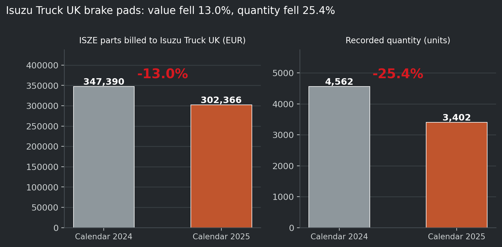
Measured, on the supplied source-category aggregate, snapshot 19 September 2026, arithmetic rechecked 23 September 2026. The 22,389-truck national figure is not the eligible population for every pad reference, and it is not divided among dealers.
Read the two halves of that figure together, because either alone misleads. Value fell 13.0% and volume fell 25.4%. A revenue-only view suggests a demand problem. A quantity-only view suggests a pricing problem. Neither is the right first question, and the difference between the two percentages is the first thing a parts manager should look at.
Across the three selected braking source categories — pads, rotors and shoes — the combined reduction is €47,068.77, of which brake pads are 95.7%.
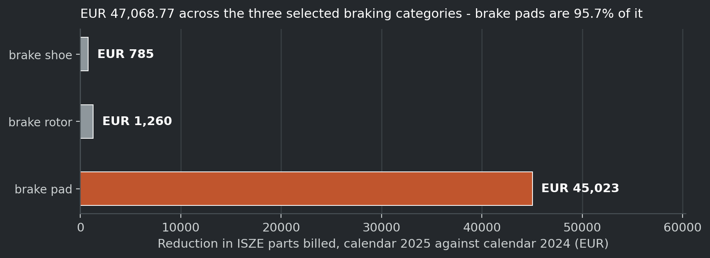
Measured, same source and period. This changes the starting sentence from braking products are down to brake pads are down, which is a decision a distributor can act on. It does not support applying one remedy across every braking product, and it does not make the reduction recoverable revenue.
I Motors, Portugal, in the clutch-kit source category. Combined billing rose from €29,959.87 in calendar 2024 to €31,702.47 in 2025 — up €1,742.60, or 5.8%. Genuine billing fell from €2,901.92 to €2,057.86 while Best Value billing rose from €27,057.95 to €29,644.61. Recorded quantity was almost unchanged: 462 kits in 2024, 461 in 2025.
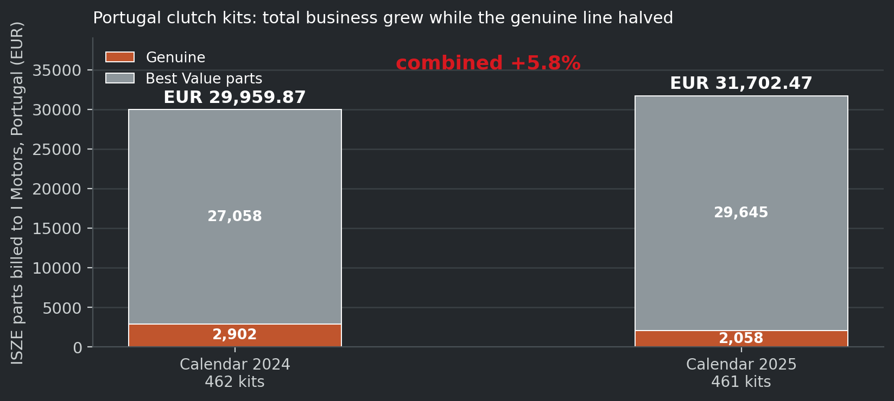
Measured, same source and period. The Portuguese national vehicle count is a market figure on the supplied basis; it is not the eligible fleet for these kits and it is not divided among dealers.
This is the example that shows the tool earning its place by preventing a mistake rather than finding an opportunity. A Genuine-only view of that line would have proposed a recovery campaign for a business that grew. The total question and the tier question have opposite answers, and only the classification lets a reader see both at once.
Four refusals, and they matter as much as the capability:
This is the pillar's unresolved dependency and it should not be softened. Three candidate classification files exist with no authority declared between them, and the drift they carry has been measured twice on two different dates with two different answers:
| Measurement | Date | Figure | What it counted |
|---|---|---|---|
| The classification audit | 27 August 2026 | 1,618 disagreeing part numbers, described in the audit file as unexplained movement | Differences between the catalogue's figure-key grouping and the pricing reference |
| The review of the classification master | 20 September 2026 | ~2,728 part numbers recorded as moved | A corrected dated rebuild against the master, on its own basis |
Measured, both, on their own definitions. They are not the same measurement and neither is an average of the other. The audit file is the workspace's own derived record; the 2,728 figure is a finding of the 20 September review of the master. The paper prints both because the honest position is that the release is not pinned, and pinning it is the finding — not because either number is the current truth.
The consequence for the product is concrete. Until one release is named with its version and build date, the family labels are usable inside ISZE only. A family label cannot be printed for a distributor from an unpinned release, because two people in the same meeting would be able to open two different files and get two different answers about the same part number. That is a one-page decision, and it is the first item in the build sequence in chapter 8.
IDS is Isuzu Dealer Standards: a self-assessment the dealer completes about itself. It is not an audit of the dealer by ISZE, and the distinction is not a technicality. Every score in the file is a number the dealer wrote about its own business. number the dealer wrote about its own business.
There are 519 dealer self-assessment records across 19 country lists, from one round, with no per-dealer assessment date, covering 514 distinct dealer names. Of those, 334 carry an individual score, and the average of those scores is 77.5.
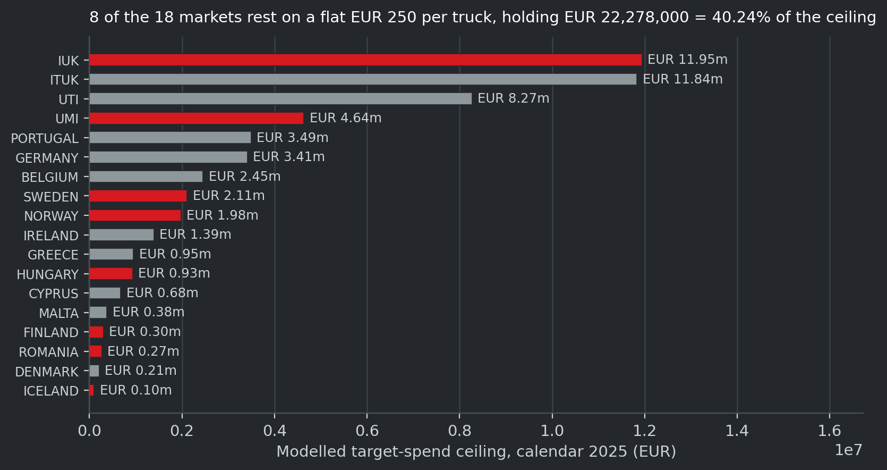
Measured, on the ISZE dealer network file of 20 September 2026.
The commercial asset sitting in that sentence is not the average. It is this: roughly two thirds of the known estate already carries an individual result, and the dealer cannot easily assemble that result for itself. The dealer has the questionnaire it filled in and a score somebody reported to it. What it does not have is an explorable view of its own answers, in the real question wording, with the section and the round beside them.
That is the only place in this programme where ISZE holds something a dealer actively wants to look at and cannot build on its own. It is also the strongest single hook the dealer-facing design has, and the current design treats it as a later step rather than the opening one.
The dealer-facing hook is not the only thing the model holds. On the same market, Isuzu Truck UK, the expected-demand model compares units actually billed against units the model expected, by product family, 2025. That comparison is the one that most often gets read wrongly, so it is worth showing on its own denominator.
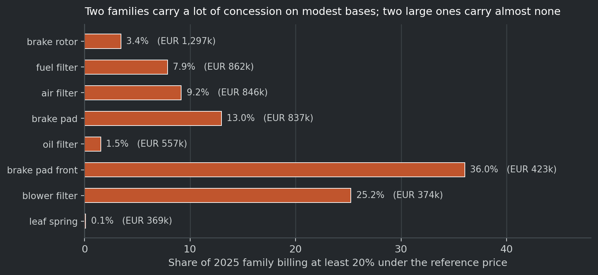
Measured, on the capture model's own stated denominator of 23,068 N75 buckets and the model-bucket split, total sales line, 2025. Nine of the largest families by billing are shown.
Read the two families above the 100% line carefully, because they are the trap. Fuel filters come out at 106.1% of modelled demand and brake rotors at 133.6%. Neither means ISZE captured more than all the demand that existed. A share above 100% means the denominator is too small for that family — the units billed are being measured against a smaller expected population than the one that actually bought — and a rate in that state cannot be read at face value. The same failure class was recorded in this workspace before, and the standing rule is the same: do not put a rate above 100% on a chart as though it were a share.
The families below the line are the usable ones. Oil filters sit at 78.7%, air filters at 61.9%, brake pads at 49.2%, urea filters at 17.2%, blower filters at 4.4%, brake shoes at 8.1% and clutch discs at 9.3%. Measured, same source and period. The spread across those seven is the commercial content: it is the difference between a family where most of the modelled demand is already being served and one where almost none of it is.
What this figure does not do is produce a euro opportunity. A modelled gap is not recoverable sales and it is not a business case, for the reason in section 5.3. What it does is order the families, so that a conversation about where to look next starts from a measured comparison rather than from the largest number in the file.
Take the Cordwallis (Heathrow) case, which is the one dealer in the network where an IDS record, a purchasing account and a workshop book all connect. The dealer's recorded score is 86.75 points, rank 24 of 44 dealers in the UK commercial-vehicle field, from a single round. Measured, and read as context only: the assessment carries no date. The ITUK self-evaluation workbook has literal label rows Date:, Dealer: and Appraiser: and all three value cells are blank; there are zero date-formatted cells workbook-wide. The score cannot be used as a performance measure.
What the tool would show, and the order matters:
What the tool then refuses to do is the design decision that matters. There are three separate records, and none of them updates another:
| Record | What it shows | What it must never be read as |
|---|---|---|
| The assessment | What was recorded, when it is available, and in which questionnaire version | A current performance measure |
| The development record | What the dealer agreed to do, who owns it and what evidence exists | A change in any recorded answer |
| A later reassessment | A new actual record, comparable only on a compatible basis | An automatic update of the original score |
Completing a development initiative advances the development record. It does not amend the original answer, raise a score, or prove a commercial outcome. That separation is what lets the tool stay useful before a second assessment round exists — which, with one round on file, is exactly the situation today.
PRISM is the analytics codebase behind the workspace's validated commercial calculations: parts billed, modelled expected demand, mix and replenishment signals. Its question is whether the commercial evidence is strong enough to act on.
PRISM changes how a commercial movement is interpreted. It is not a fleet graphic bolted onto a parts chart.
The workspace holds a modelled target-spend ceiling for 2025: €55,359,060 across the eighteen markets that carry a vehicle-in-service figure, against €32,381,311.55 of parts billed across twenty-two distributors. Measured on the GPS distributor file, 2025 rows, recomputed 23 September 2026.
Figure 14 is that ceiling by market, and the colour marks which markets rest on an assumption.
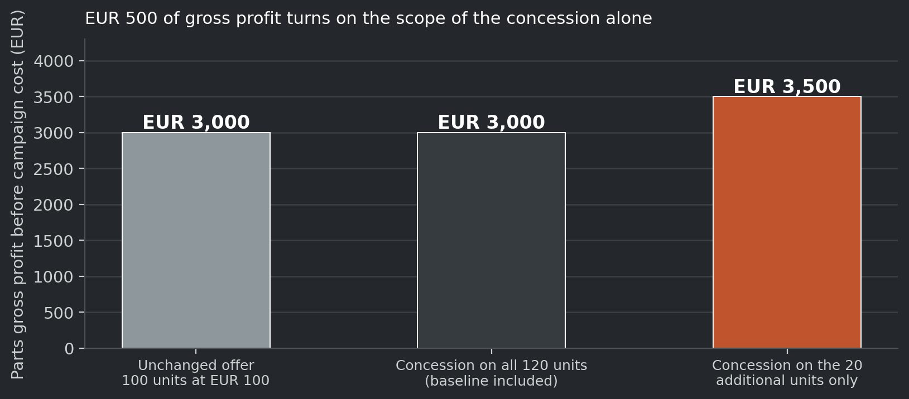
| Value | Share | |
|---|---|---|
| Modelled target-spend ceiling, 2025, all markets with a figure | €55,359,060 | 100% |
| Of that, eight markets carrying a flat €250-per-truck placeholder | €22,278,000 | 40.24% |
Those eight markets are Finland, Iceland, UMI, Norway, Romania, Sweden, Isuzu UK and Hungary. Measured, recomputed 23 September 2026 from the same file. The megaprompt's own check was €22.278M of €55.253M; the file on disk gives €22,278,000 of €55,359,060, or 40.24%, and the small difference is in the denominator rather than the placeholder.
Two things follow, and both belong in any conversation that uses the ceiling.
First, 40% of the ceiling is an assumption rather than a measurement. Two-fifths of it comes from a flat per-truck figure applied to markets where no measured purchasing rate exists. A reader who quotes the ceiling without that sentence is quoting an assumption as though it were a finding.
Second, and this is the harder one: the €55.3m ceiling is not revenue and must never be presented as revenue. It is what the market could spend on parts on a modelled basis, not money available to ISZE. Multiplying it by a recovery percentage would invent a revenue case this programme refuses to make. The correct use of it is comparative: this market sits at this share of its own modelled ceiling, and the next market sits at that share, and the ordering of those two numbers is the decision input.
The second PRISM example is the one that stops a funding decision going wrong.
On lines carrying a reference price, €6,645,823.20 of PMS — parts, maintenance and service — billing was recorded across twenty-four distributors in 2025. Of that, 8.4% (€558,851) sat at least 20% under the reference price and 2.8% at least 30% under. In 2024 the same two shares were 13.0% and 4.0% of €7,110,331.10. Measured, campaign-suspect summary, 2025.
The movement from 13.0% to 8.4% is favourable and real. The trap is in the distribution:
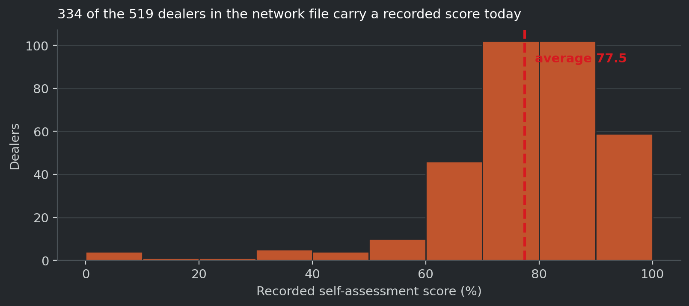
| Distributor | Share of 2025 billing at least 20% under reference | 2025 billing |
|---|---|---|
| Ukraine | 28.2% | €203,092 |
| Portugal | 20.2% | €337,927 |
| Isuzu UK | 16.9% | €1,270,441 |
| Germany | 16.6% | €416,183 |
Measured, same source and period.
The four distributors with the highest deep-concession shares are not the four largest. A programme that pays per campaign without a size floor would spend most of its money in the smallest markets, because that is where the share is highest. That single sentence is the strongest argument in this paper for a minimum qualifying size, and it comes from the data rather than from caution.
The same picture by product family makes the point sharper:
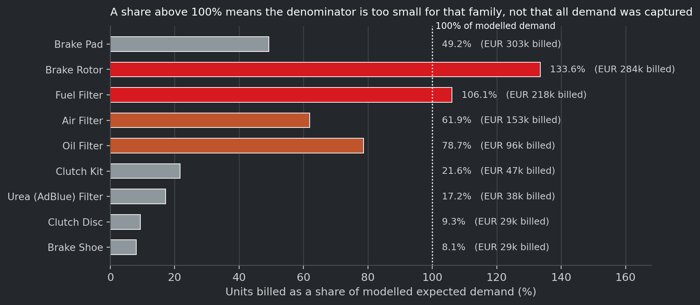
Two families carry a large deep-concession share on a modest billed base — brake-pad-front at 36.0% of €423,356 and blower filter at 25.2% of €373,765 — which is the shape of a handful of large deals rather than a broad pricing position. Two large families carry almost none: brake rotors at 3.4% of €1,297,437 and oil filters at 1.5% of €557,022. Measured, same source and period.
A family whose pricing is settled has no price opportunity. Its opportunity, if one exists at all, is somewhere else — range, application, or coverage. Saying that out loud is worth more than a chart, because it stops a settled line being offered up as a campaign candidate.
These are not cautions. They are the conditions under which a PRISM number means anything:
There is no reliable measured price response in the current evidence base. This belongs in the body of the paper rather than an appendix, because silence lets a reader assume whatever responsiveness suits the conclusion being argued.
| Product family, 2024 to 2025 | Price effect on quantity | Reading |
|---|---|---|
| Maintenance service | Steeply negative, with a large standard error and almost no explanatory power | Direction only. Not a usable elasticity. |
| Brakes | Flat to slightly positive, with a large standard error | Inconclusive. |
| Lubrication | Not identified, because the list-price movement was nearly uniform across the pairs | Use the median quantity movement instead. |
Measured, year-on-year pairs on 2024 and 2025. Approximately €233,000 of the brakes change sits in price-up with volume-down, €172,000 in price-up with volume-up, and €335,000 in volume-down with price flat. Direction and rough magnitude only.
The measurement is of the stocking response from ISZE to the distributor, not dealer-market demand, and it does not control for demand shocks. The practical rule is therefore absolute: no scenario in this programme forecasts a demand response. A threshold says what would have to happen. It does not say what will.
DLOD is Don't Lose the Deal: Isuzu Truck UK's existing programme for competitive quotations. Support that helps a dealer defend a job when the customer has a cheaper alternative in front of them. This is the pillar that is proven in one market and unproven everywhere else, and this chapter has to do two jobs — describe what runs today, and state honestly what a rollout would require.
A naming point, because earlier editions of this paper used the same initials for a different idea. The earlier Universe editions used "Deal of the Day" for a prepared, time-limited promotional offer that ISZE helps a distributor put together — a product selection, an audience and a set of economics. That is a different product. Pillar four is Don't Lose the Deal, the competitive-quotation support programme. The two share two initials and share nothing else. Neither has been renamed here, and the promotional idea is not what this chapter is about.
The programme is real and documented rather than aspirational. It runs on:
Two documents of €30,000 exist, a year apart — 14 February 2025 and 30 March 2026 — plus an earlier 2023 credit of €5,304.37 covering two quarters. Measured, read line by line from the raw billing extracts on 23 September 2026 and shown in section 6.3. The programme's own earlier record referred to one prior-year memorandum carrying a €30,000 incentive, and the record understates it: two documents is a recurring arrangement rather than a one-off.
Two commercial observations about that anchor, both of which matter for the section below. Against Isuzu Truck UK's own parts billing — €5,564,543.92 in 2025 on the GPS distributor file — one €30,000 document is 0.54% of one market's billing for one year, which is why the programme is affordable there. And the figure is an anchor rather than a cost: it records what was paid in one market, not what a market requires, so it is the starting point for the arithmetic rather than an answer from it.
Three concrete reasons, and none of them is sentiment:
An earlier version of this paper, and the brief behind it, said the search for the programme label across the billing ledger returned nothing. That reproduces — and it says the wrong thing, so the pillar has been corrected.
The derived billing working file carries 538,346 invoice lines across twelve columns, and the programme label does not appear in any of them. What that file does not carry is the free-text reference a person typed. That column is dropped in the derived file and preserved in the raw billing extracts. So the label was never lost by the programme. It is lost by the file everybody searches.
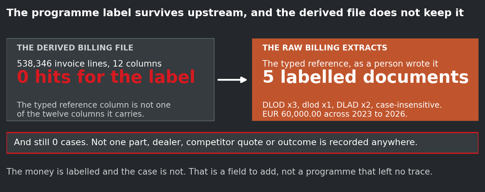
Reading the raw extracts directly confirms it. Five labelled documents exist, all against Isuzu Truck UK, all carried by the Purchase order no. reference a person typed, and the case varies:
| Reference as typed | Date | Value | What it is |
|---|---|---|---|
DLAD Q1 2023 | 6 June 2023 | €14,421.73 | A rebate credit, one quarter |
DLAD Q2 2023 | 15 September 2023 | €10,273.90 | A rebate credit, one quarter |
DLOD 2023 Q3+Q4 | 3 January 2024 | €5,304.37 | A rebate credit, two quarters |
DLOD | 14 February 2025 | €30,000.00 | A rebate credit, full-year incentive |
dlod | 30 March 2026 | €30,000.00 | A rebate credit, full-year incentive |
Measured, verified line by line on 23 September 2026 in 01_data\00_derived\cy2023_2024.csv, 01_data\00_derived\cy2026_q1.csv and 01_data\00_derived\order_headers_from_Order_Detail.csv. The case varies between DLOD, dlod and DLAD, so a case-sensitive search finds only some of them — which is part of why this went unnoticed.
Two corrections follow, and they are not cosmetic.
First: the label exists, and it is the derived file that drops it. Read the other way, the earlier wording tells a reader the programme left no trace at all, which would invite the conclusion that there is nothing to fix. The accurate statement is better and more useful: the field exists one layer up and is dropped one layer down, so the chain from programme name to billing line is broken in the middle — and a broken chain is a thing somebody can repair. That is exactly the chain a later evaluation would have to join.
Second: the programme's own record understates the anchor. The record refers to one prior-year memorandum with a €30,000 incentive. There are two €30,000 documents, a year apart — February 2025 and March 2026 — plus the earlier 2023 line of €5,304.37 covering two quarters. Two documents is a recurring arrangement rather than a one-off, and a design priced on a single year is priced on half the evidence.
One further observation about the record itself, and it explains how this was missed. The claim register that is meant to be the authority for disputed figures has never carried a DLOD row at all. Measured. The disagreement over whether the label exists was therefore never caught, because the register that exists to catch disputed figures has no row for this programme to disagree about. That is a gap in the register rather than in the programme, and it is worth naming in a paper whose whole evidence law rests on that register.
The correction above changes what the search says. It does not change what the programme can prove, and the difference matters.
Five labelled payment lines exist across three years. Zero cases are recorded anywhere. Not one part reference, not one dealer, not one competitor quote, not one price gap, not one won-or-lost outcome. The five lines are one line each: a credit with a name on it and nothing else.
So the accurate sentence is: the money is labelled and the case is not recorded. That is materially different from "nothing was recorded", and it is stronger, because it locates the problem in a missing field rather than in a missing programme.
The programme is therefore three things at once:
The reason is structural rather than an oversight. A rebate credit note records that money moved. It does not record that a question was asked, what the competitor quoted, or whether the job was kept. The event happens between the distributor and the dealer, and on ISZE's side the only trace it can leave is a payment. And the programme name is not on the rebate lines themselves — it sits in the free-text reference in the raw extract, so the label and the money sit one layer apart, which is precisely the gap a later evaluation would have to close.
Therefore: DLOD spend is not proof of incremental profit. A credit note proves that support was paid. It does not prove the customer was kept, that genuine share grew, or that anything happened that would not have happened anyway. Anyone who reads rebate volume as a result is reading a payment as an outcome.
The 2023 lines are labelled DLAD, not DLOD, and they hold €24,695.63 across two quarters. The two acronyms together account for the whole 2023 record, and across 2023 the total is exactly €60,000.00 — two quarters under one set of initials, two quarters under the other.
DLAD is an unexplained label and this paper does not resolve it. Either it is the same programme under an older name, or it is a different programme that happens to sit in the same field and the same entity — and nobody currently knows which. Two consequences follow, and both are stated rather than worked around:
DLAD into a DLOD total. The €24,695.63 is not added to the €35,304.37 the two clearly-labelled DLOD lines carry, and no combined three-year figure is printed here.DLOD lines would conclude the programme began in 2023 with a two-quarter credit, when the field actually shows four 2023 quarters under two different initials.One question to Isuzu Truck UK settles it, and it should be asked before any baseline for a rollout is fixed, because the two answers give two different starting years.
And a caution on precision. No total in this chapter should be read as exact to the euro. Two rebate lines of €15,568.00 each — same distributor, same date, same value, same entity — appear twice in the billing layer and once in the order layer, and that duplication is reported rather than resolved, on the same standing rule this workspace applies to repeated rows everywhere: hold them as potential duplicates, report both readings, and remove nothing until the transaction evidence settles it.
The plan is to run Don't Lose the Deal for all ISZE dealers, with Isuzu Truck UK as the template rather than the finished scope. The business owner's instruction is explicit, and it changes what the evidence gap means.
If the programme runs in one market on a memorandum with a rebate and a sign-off, and the ledger cannot tell you what was defended or whether it was kept, then rolling the same mechanism into every market replicates that blind spot in each one. Each new market would buy the payment and inherit the inability to judge it. The cheapest moment to fix it is now, while the programme is in a single market and there is one arrangement to amend rather than a dozen.
That is the constructive half of this chapter, and it is the pillar's actual recommendation: design the record before the rollout, not after it.
For a case to be judgeable at all, five things have to be recorded at the moment they happen. Section 6.3 already shows the second reason this matters: the label survives one layer up and the case is never recorded at all.
| What must be recorded | Why it cannot be reconstructed later |
|---|---|
| The part | The reference the job turned on. Without it the case cannot be tied to a family, and a family is the only level at which the outcome can be compared to anything. |
| The dealer | Which account asked, and where. Without it the before-and-after view has no subject. |
| The competitor evidence | What was quoted against us, and its date. A price claim with no date is not evidence, and it cannot be compared to our own reference at the time. |
| The outcome | Won, lost, or no decision recorded. The third state has to be visible, because a case with no recorded outcome is not a loss and must not be counted as one. |
| The before-and-after view | The same dealers and families, on the same period basis, before and after. |
The companion document turns this into eight fields, and the extra three are worth naming because they are not optional once the five above are captured: the date, the support requested against the support granted, and — where the job was won — the subsequent order reference, so the win can be verified in the ledger rather than asserted. That last one is what stops the outcome field being filled in by the person who benefits from the support. The record costs about five minutes per case, against a credit note that is being raised anyway, which is what makes it affordable to ask for.
And one caution that belongs with the fifth row. Support that cannot show a before-and-after should not be called successful from rebate volume alone. A programme measured on how much it paid out is measured on its cost, not on its effect. The record above is what converts a payment into a case.
This is the same gap that weakens the tender pillar in chapter 7.5, and a reader who meets it twice should understand it as one data decision rather than two separate faults. In both cases ISZE can qualify, prioritise and support; in neither case can it currently show that it won anything, because nobody is recording the outcome at the moment it is known. One decision fixes both: agree to record outcomes, in a shape both pillars can read.
The business owner's question about this pillar is the right one: how do we run this for every dealer in a way that does not cost too much. That question is not answered by an intention, and it is not answered in this paper either. What this paper can do is name the constraints honestly so the costed design has somewhere to start.
Constraint one: intensity does not stay a rounding error when it scales, and the anchor is two documents rather than one. The recorded figure is €30,000, and there are two of them, a year apart — February 2025 and March 2026. Against Isuzu Truck UK's own parts billing of €5,564,543.92 in 2025 that is 0.54% of one market's billing for one year, which is small in one market and is why the programme is affordable there. Measured on the GPS distributor file for the billing; Measured for the two documents.
Scaling the same intensity across the whole network turns it into a real cash question rather than a rounding error, whatever the exact multiplier is. The costed design works that multiplier out in full and this paper does not repeat its arithmetic, but the shape of the answer is worth stating because it is the thing a reader will want: on the companion document's own figures, three markets for twelve months is about €90,000 of support, and the full nineteen-market version is about €570,000, which is 1.7% of one year's billed parts. Proposed arithmetic on a Measured anchor; the companion document carries the workings and the caveats.
And the cheapness cuts both ways, which is why the affordability question is real but second. A cost small enough to approve without argument is also small enough to approve without evaluation. A programme that runs for three years at that level and cannot say what it bought has spent about 5% of a year's parts on an unmeasured bet. The money is affordable. Being able to judge it is the harder part, and the design therefore has to decide what the unit of support is, because a per-dealer entitlement and a per-case payment produce completely different bills at network scale.
Constraint two: the approval path, not the money, is very likely the binding limit. The programme runs with a Japan-side sign-off step, and the companion document prices the exposure directly: at any realistic case size, a network-wide programme generates tens to hundreds of approval events a month. At €250 a case the sixteen-market route implies about 1,920 cases a year; at €5,000 a case it implies about 96. Proposed, because case size is not measured anywhere. A route designed for a handful of annual memoranda does not become a network approval path by being used harder.
That is a design question with a design answer — agreeing the envelope once through the existing route and approving cases inside it locally against a written rule — but the companion document is explicit that delegation without a case record is how an envelope becomes a slush fund, so this lever is only safe in combination with the record in section 6.7. It is a decision somebody has to take, and it has to be taken before the rollout rather than during it. It saves no cash at all and it is probably the highest-value lever in the design.
Constraint three: an uncapped rollout buys activity rather than evidence. Support paid per case cannot currently be tested for whether it changed the outcome, for the reason in section 6.4. A rollout that scales the payment without first fixing the record would buy more unjudgeable payments. The sequence matters more than the size: the record first, then the scale.
The cost of the record itself is small, and that is what makes the whole argument work. The companion document prices it at about five minutes per case to fill eight fields against a credit note that is being raised anyway — roughly 30 to 80 hours a year network-wide, or €1,800 to €6,500, against €480,000 of support at the sixteen-market route. That is 0.4% to 1.4% of the support it makes evaluable. Proposed arithmetic on the document's own stated rates and case volumes.
Three conditions have to hold for that conclusion, and the companion document names them. The record must ride the existing credit-note step rather than become its own system with its own login, because that is what keeps the marginal cost near zero. The case record must not be mistaken for the evaluation: a record makes a case judgeable, and only a before-and-after view makes the programme evaluable. And the outcome field must be filled honestly or left alone, because an outcome filled in by the person who benefits from the support answers nothing.
This paper does not restate the companion document's costed routes, because two documents quoting the same arithmetic is how they come to disagree. The costed design, the three routes, the ten cost levers and the recommendation all sit in 01_Strategy\DLOD_NETWORK_ROLLOUT_2026-09-23.md, which was written on 23 September 2026 and read for this chapter. That document is the authority for the rollout's cost, and this paper adds no cost figure of its own. A reader who wants the numbers should open it; a reader who wants to know why the question is hard should read this chapter.
The distinction the pillar turns on, in one table.
| Proven today, at Isuzu Truck UK | What another market would need before it runs | |
|---|---|---|
| Authority | A memorandum of understanding, and two €30,000 documents a year apart | A local memorandum or equivalent authority, negotiated in that market |
| Mechanism | A rebate credit note that the ledger carries, with the programme name in the typed reference one layer up | A rebate mechanism that market's ledger can carry, and a reference field that is not dropped in the derived file |
| Approval | A Japan-side sign-off route that is used | The same route extended to that market's volume, with an agreed envelope and delegated approval inside it |
| Population | A dealer base with account-level purchasing beside it | A dealer population with account-level purchasing, or the case cannot be judged |
| Evidence base | One matched account case (Cordwallis, chapter 8) | A local before-and-after basis on the same period and scope |
| Outcome record | Not present. Five labelled payments, zero cases | The eight fields in section 6.7, agreed before the first case is paid |
The rollout is Proposed, in the evidence-label sense: a design and a decision not yet taken. No market beyond Isuzu Truck UK is live, and nothing in this chapter should be read as saying that the Isuzu Truck UK arrangement is a template the other markets have already accepted. It is a starting point that has the advantage of existing, and the disadvantage of being unjudgeable as it stands.
The costed design is not in this paper. It sits in 01_Strategy\DLOD_NETWORK_ROLLOUT_2026-09-23.md, alongside the three costed routes, the ten cost levers and that document's own recommendation — a three-market, twelve-month evidence pilot at about €90,000, with the sign-off path rather than the cash identified as the binding constraint and a recording requirement of about eight fields at roughly five minutes per case. Its figures are used in section 6.8 above and it remains the authority for them.
This pillar answers one question: which public opportunities are worth pursuing, with what support, and who owns the next step.
It is a first-class part of the programme rather than a side tool. The business owner has already decided that tenders belong inside Universe rather than beside it, and that decision is what makes this chapter a pillar rather than an appendix. It is deliberately not the hero of the paper. Public procurement is one input to a parts and aftersales conversation, and it is an input that arrives on somebody else's timetable.
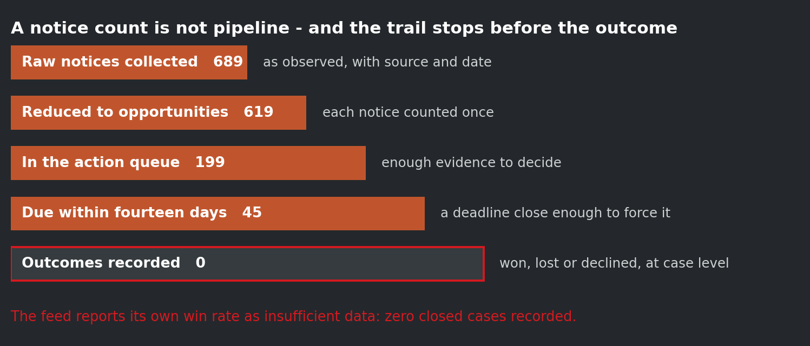
| Stage | Count | What it means |
|---|---|---|
| Raw notices collected | 689 | As observed, each carrying its source and the date it was seen |
| Reduced to opportunities | 619 | The same notice counted once, after duplicate families are collapsed |
| In the action queue | 199 | Enough evidence to take a decision |
| Due within fourteen days | 45 | A deadline close enough to force the decision |
| Outcomes recorded | 0 | Won, lost or declined, at case level |
Measured, on the live opportunity feed generated 22 September 2026. Of the 619 opportunities, 286 carry an aftersales signal — a parts, service or maintenance element that a distributor could actually supply. Decisions already recorded on the feed: 2 attack, 204 selective, 75 watch, 338 ignore.
Now the two sentences that a reader has to take from that table, because either alone is misleading:
A notice count is not pipeline, and a tender's advertised value is not expected Isuzu parts revenue. Many of these notices are for vehicles or chassis with a service element attached, and the aftersales content has to be read out of the notice rather than assumed. The useful output of this pillar is a qualified shortlist with a pursuit decision, not an alarm feed. A feed that produces 619 alerts and 2 attacks is producing a triage problem.
And the trail stops before the outcome. Zero outcomes are recorded at case level, and the feed says so about itself: the win-rate field reads insufficient data, with a stated minimum sample of twenty closed cases before it will display one. The pillar can qualify and prioritise. It cannot currently prove it won anything. That is the pillar's honest limit, and section 7.5 explains what closes it.
Both halves are real, and the pillar does not work with only one of them.
What ISZE gives. Country-relevant open opportunities with the aftersales content made visible, so a distributor sees the parts and service footprint early enough to act on it. Not a list of notices: a qualified shortlist carrying its source, its observation date, the known deadline, the actual scope and a decision about whether to pursue. Where the opportunity supports it, the relevant Isuzu functions assemble a combined vehicle and aftersales proposition, and headquarters receives a brief that makes the requested decision unmistakable.
What ISZE asks. Lightweight feedback when a tender is won, lost or ignored. One line per case. That is the whole ask, and it is deliberately the smallest thing that makes the pillar improve. Without it the feed is noise, because a qualification rule that is never told whether it was right cannot become better.
Take the notice that scored highest in the feed on 22 September 2026. A frame agreement for vehicle repair services from a Romanian county emergency inspectorate, published 16 September 2026, with a deadline of 23 October 2026 — thirty-one days of runway at the time of observation. The feed records it with a service and parts signal (reparatii, intretinere), a framework route (acord cadru), and recurring framework potential among its score drivers. Its owner is suggested as the CEE lead, and its suggested next action is to verify the lifecycle stage.
Read what the feed does and does not do with that notice, because it is the honest shape of the product:
| The feed tells you | The feed does not tell you |
|---|---|
| The buyer, the country, the source, the notice id | Whether the vehicle fleet is Isuzu or anything else |
| The published date and the deadline | The value. This opportunity's value field is empty |
| That a parts and service signal is present, with the words that matched | What the competitor position is |
| A suggested owner and a suggested next action | Whether the distributor will pursue it |
The value field being empty is the point rather than a defect: 588 of the 619 opportunities carry no value figure, and the paper does not invent one. What turns a notice into a pursuit decision is the distributor's own reading of the local requirement, which is exactly the reading ISZE cannot do from here. The feed's job is to get the right notice in front of the right person early enough that the reading can happen.
There is no won-or-lost case log at case level. The pillar can therefore qualify and prioritise, and it cannot currently prove it won anything.
This is the same gap as the DLOD pillar's, and the two should be read together. In both cases the event that matters — a defended job, a submitted bid — happens outside ISZE, and the only thing that lands on ISZE's side is a part that eventually ships. In both cases ISZE can do everything up to the outcome and nothing after it.
One decision fixes both: agree to record outcomes, in a shape both pillars can read. And the DLOD pillar now shows a second reason to take it seriously, because there the money is labelled and the case is still not recorded — the programme name survives in the raw extract, is dropped in the derived file, and resolves to five payments and zero cases. The gap is a missing field, not a missing process, and a missing field is cheap to add at the moment the credit note is raised and impossible to reconstruct afterwards.
That is the single data decision this paper asks for. It is not a system, a report or a permission. It is an agreement that when a case closes, one line gets written down.
The five pillars each carry a worked example. This chapter states what each one is evidence for and what it is not, in one place, because a reader who has just met five examples needs to know which of them can carry a decision.
| Example | The business question it answers | What it proves | The limit that travels with it |
|---|---|---|---|
| Isuzu Truck UK brake pads | Is the braking reduction spread, or concentrated? | Value fell 13.0% while quantity fell 25.4%, and pads are 95.7% of a €47,068.77 reduction across three categories | The 22,389-truck national figure is not the eligible population for every pad reference and is not divided among dealers |
| Portugal clutch kits | Did this line's business fall? | Total business grew 5.8% while the genuine line fell; quantity was flat at 462 to 461 | Prevents a wrong campaign rather than finding an opportunity; a Genuine-only view would have been wrong |
| Deep concession by distributor and by family | Where would a campaign-support programme actually spend its money? | The highest deep-discount shares sit in the smallest markets; brake-pad-front is 36.0% of a €423,356 base | Measured on lines carrying a reference price only; a reference valuation is not a transaction |
| The dealer self-assessment profile | Does ISZE hold anything a dealer wants? | 334 of 519 dealers carry a score, average 77.5, which the dealer cannot easily assemble for itself | One round, no per-dealer date, self-reported; not a performance measure |
| The Cordwallis case | What did one dealer's own fleet consume, against what it bought? | 72 trucks, 269 jobs, 1,627 lines; 148 fitted units; 104 verification checks with 0 failures | Fitted and bought cannot be joined; 72 is a floor, not a fleet |
| The opportunity feed | Which open opportunities are worth pursuing? | 689 notices reduce to 619 opportunities, 199 in the queue, 45 due within fourteen days | Zero recorded outcomes: the pillar can prioritise and cannot yet prove a win |
Cordwallis Commercials (Heathrow) is the one case in this material where a purchasing account, a servicing workshop and a dealer-level sales file all connect — matched on an exact normalised trading name, one-to-one. What the match establishes is identity only. It does not establish stock, dealer retail sales, or shipment-level movement. Two files carrying the same trading name is a name match, not a proof that one legal entity bought, held or sold a specific part.
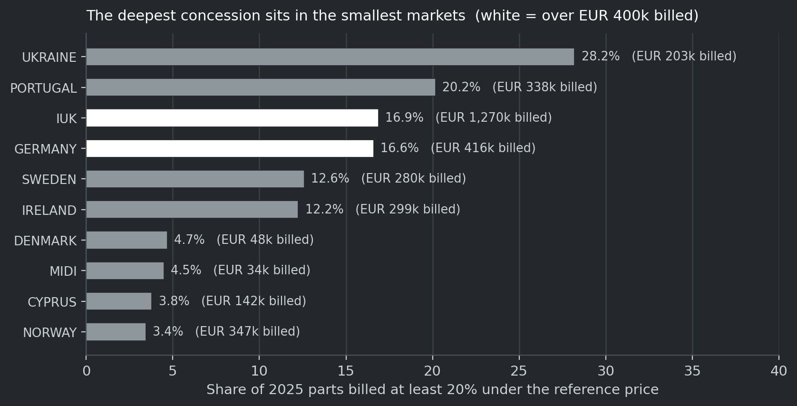
Calendar 2025, engine filters, oil and fuel:
| Value | |
|---|---|
| Lines at the workshop, all cost centres | 1,627 |
| Jobs | 269 |
| Trucks serviced | 72 on all lines, 70 on part-bearing lines |
| Part cost-centre lines | 629, of which 353 carry a usable ten-digit part number |
| Engine-filter units fitted, on the twelve named numbers | 147 |
| Engine-filter units fitted, on the consumable family | 148 |
| Units bought by the same account, on the twelve | 719 |
| Units bought, on the consumable elements | 836 |
| Units bought, on the family the book consumes | 852 |
| Verification | 104 checks, 0 failures |
Measured, verified at 104 checks with 0 failures against the source workbook.
The named references behind the fitted count, because an internal reader needs them. The fitted units sit on the twelve named numbers in the engine-filter family: oil and fuel filter elements for the N-series. The one unit outside the twelve is 5876150240, an element kit for a fuel filter — a consumable element, which is why it belongs in a replacement measure and is not excluded as a non-consumable. The purchase side carries sixteen units across seven non-consumable numbers — filter assemblies, a gasket and a cap, including 8943993990, 8975080920, 8978396450, 8975080931, 8975425050, 8975540311 and 8983104491 — which a filter-replacement measure must not count. The rule is that one part population is named per calculation and printed beside the figure. The twelve carry 147; the consumable family carries 148; the family the book consumes is 46 part numbers carrying 852 bought units.
The fitted-against-bought comparison is explicitly blocked and must not be interpreted. The two counts come from different populations and different channels, and no key joins them. The difference between them is not a gap, a leak, a shortfall or evidence of under-servicing. It prints as separately labelled context, and the page has to say so rather than leave a reader to work it out.
What the case cannot say, and each of these is one missing thing:
And the money carries no currency. The workbook declares no currency: no column, no code, and no symbol on an amount column. It is a UK distributor's book with a VAT identifier column, and the tax rate on 337,275 of 345,069 testable lines is exactly 20%, which is a signal for sterling and not proof. Every money figure in this paper from that source therefore prints as the workbook's own money unit, currency not declared by any source, and quantity survives where the monetary claim cannot.
Both are tempting and both would be invented, so they are named and refused.
A quotation outcome. There is no quotation record, no case log and no won-or-lost outcome anywhere in the material. The event happens between the distributor and the dealer, and it leaves no trace on ISZE's side beyond a part that eventually ships months later. A competitive-quote case written as though the outcome were known would be fiction with a plausible table around it.
A range gap read as a stock record. What ISZE holds is what was billed, which is what left our side. What was available at the counter, in what quantity, at the moment the customer asked, exists only in the distributor's own system. A missing purchase in an incomplete extract is not a stock-out and is not an out-of-range part.
Where an example cannot be built, saying what is missing is a valid product outcome. A well-explained not enough evidence to change a price is more useful than a confident sentence with no source under it. It belongs in the paper for that reason.
Each worked example in this paper carries, on the page: the business question; the market or account and the sales stage; the period; the product family and the actual part references where they are supported; the observed signal; the fleet context and what it is not; the Genuine and Best Value evidence; what the evidence limits are; the proposed decision; who owns it; and how the outcome would be measured.
One reporting clock at a time. A calendar year is never added to a financial year. Isuzu's fiscal year runs April to March; the historical examples in this paper compare full calendar years, and that is stated with each of them. The 2026 billing reference runs through 30 June 2026 and is a half year rather than a full-year observation. A missing month is not a zero.
This chapter states what a dealer and a distributor are being asked to do, what each receives, and how likely each step is to happen. The scores are judgement on this design, not measurement. They are given so that the design can be argued with, and each one carries the reason it has that number.
The dealer's reason to participate cannot be a reporting obligation. Three structural facts shape it: ISZE has no direct commercial relationship with the dealer; the distributor already receives the dealer's purchasing information; and the dealer is being asked to spend time at a parts counter where a customer is standing.
What the dealer receives that it cannot get today:
| What it receives | Why it is hard to get otherwise |
|---|---|
| Its actual self-assessment answers, in the real question wording, with the section and the version | It holds the questionnaire but not an explorable view of its own record |
| A development priority it chooses, with milestones and evidence it controls | Assessment rounds give a score, not a plan the dealer owns |
| A prepared own-business review of its recorded purchasing, with a correction route | Today this arrives, if at all, as a national or distributor-level summary |
| A visible record of who owes the next step, including ISZE and the distributor | Today the dealer cannot see when it is waiting on somebody else |
How the dealer joins, step by step:
Honest assessment of the first ten invitations:
| Step | Score /100 | Why that number |
|---|---|---|
| Dealer accepts the first prepared review | 55 | Reasonable, because it costs ten minutes and arrives finished. It competes with a customer standing at the counter. |
| Dealer corrects the interpretation | 70 | Low-cost and self-interested. This is the most reliable step in the design. |
| Dealer opens and uses its own self-assessment profile | 65 | The strongest hook in the programme: its own answers, in the real wording, with a priority it chooses. |
| Dealer returns for a second eligible task | 30 | No cash, no visibility gain, no recurring trigger. Habit does not form on goodwill alone. |
| Dealer shares anything beyond a correction | 20 | Requires a reason that has not yet been created. Nothing in the design currently supplies it. |
| Dealer joins as designed today | 45 | Credible in its first three steps, unproven after them. |
What raises the dealer score, in order of effect. Make the self-assessment profile the opening rather than a later step, so the first thing a dealer sees is its own data rather than a supplier's reading of it. Fund a bounded setup task, so the dealer's own time has a price and the distributor has something to offer rather than something to ask for. Make the return visible, because invisible follow-through is what ended the previous data requests.
The distributor's position is stronger and simpler. It already has an obligation to report and it already has a rebate linked to reporting. The change proposed is what comes back.
| What the distributor receives | Frequency | Decision it supports |
|---|---|---|
| Prepared national or network review | Monthly, after a usable submission | Which accounts and ranges deserve attention |
| Product detail behind a movement | On the selected case | Which references and product forms explain a change |
| A range or campaign brief | On the selected initiative | Whether to develop, narrow or protect the offer |
| A tender proposal framework | On a qualified opportunity | Whether to pursue and what support to request |
| A reviewed development record per dealer | On self-assessment work | Where to direct its own network-development effort |
How the distributor joins:
Honest assessment:
| Step | Score /100 | Why that number |
|---|---|---|
| Distributor accepts the opening | 75 | Cheap, adds no reporting burden, and the rebate floor already exists. |
| Distributor uses the review internally | 45 | Depends entirely on whether one review answers a question the distributor already had. |
| Distributor selects a case with a named owner | 50 | Requires management attention, which is the scarcest resource in a distributor's year. |
| Distributor shares account-level detail beyond the current report | 35 | Genuinely useful and genuinely sensitive. Needs the access boundary to be real rather than promised. |
| Distributor uses Universe to develop its own dealers | 40 | The highest-value outcome and the one the design supports least well today. |
| Distributor co-funds participation | 25 | No precedent. Should not be assumed and should not be requested in the first year. |
| Distributor joins as designed today | 55 | A credible low-cost start with an unproven second step. |
The gap between 75 for accepting and 45 for using is the whole problem. Two changes close it. Answer a question the distributor already has, rather than presenting a general capability, because a review that is merely available is a review that is not read. Make the distributor's own dealer development the visible output, because that is the only framing in which the review serves the distributor's commercial interest rather than ISZE's.
519 dealer self-assessments exist today across 19 networks. That is what this network produces when an obligation is attached to a dealer-facing requirement. Anything in this programme that scores below that base rate needs a reason the participant can feel, and only two reasons are available: money, or a visible improvement in the participant's own business.
| Do not | Why |
|---|---|
| Pay per submitted record, per row or per disclosed field | Rewards disclosure volume rather than useful work |
| Make ordinary service conditional on a contribution | Turns a normal service into a bargaining instrument and destroys the premise |
| Build a public dealer league table | Turnover favours large businesses and self-assessment coverage differs by market |
| Ask for dealer resale prices by default | Not needed for the core review and the most sensitive item on the list |
| Approach a dealer directly | The distributor owns the relationship and the audience decision |
| Count logins or uploads as participation | Neither is evidence that a decision improved |
This chapter states four things: the denominator, the hurdle, the price of a dealer, and what campaign support should cost. It does not forecast a return, and it does not ask for money. The funding decision belongs to the business owner and the recommendation is in chapter 11.
Figure 11 is where the billed parts actually sit, which is the denominator every share in this chapter divides by.
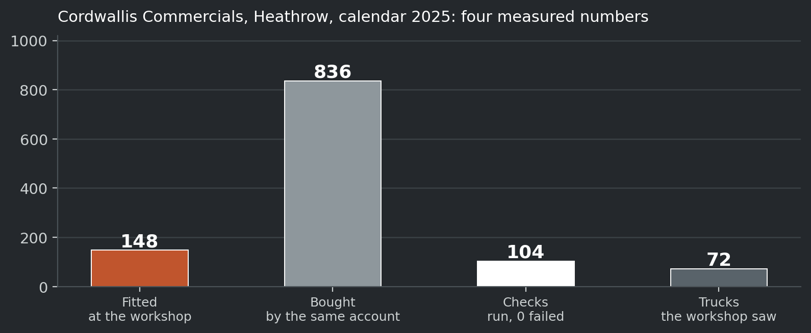
| Basis | Value | What it is |
|---|---|---|
| Network parts billed to distributors, calendar 2025 | €32,381,311.55 | GPS parts billed across 22 distributors on the supplied basis |
| Of that, the 18 markets carrying a fleet figure | €30,756,771.61 | Same source, rows with a vehicles-in-service count |
| The €100,000 route as a share of one year's network billing | 0.31% | Arithmetic on the two lines above |
| The €300,000 route on the same basis | 0.93% | Arithmetic on the same two lines |
Measured, GPS distributor file, 2025 rows; arithmetic 23 September 2026.
The programme is proposing to spend between three-tenths and nine-tenths of one percent of a single year's parts billing. That is the right size for a pilot and the wrong size for a platform build. It also means the programme does not need to move the whole business to justify itself, and it must not be presented as though it will.
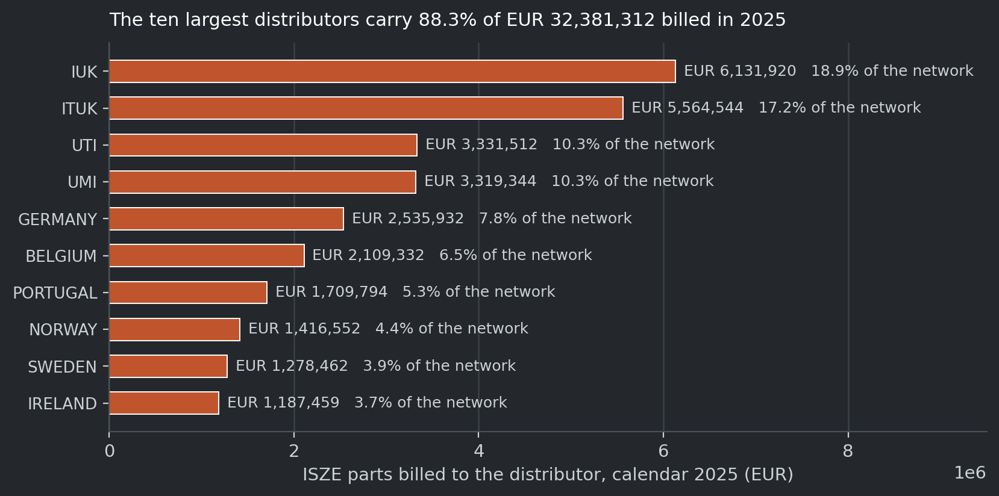
If a beneficial action is worth €500, the €100,000 envelope requires 200 of them and the €300,000 envelope requires 600. At €5,000 per action, the same envelopes require 20 and 60. Proposed and hypothetical arithmetic; the contribution per action is an assumption, not an estimate of dealer profitability.
Two consequences follow, and they are the reason this section exists:
The hurdle is higher again once internal effort and continuing operation are included, because the envelope covers cash rather than people's time. Report the cash-only comparison and the fully costed comparison separately; they are different numbers and averaging them would flatter the programme.
| Dealer basis | Count | Consequence for a €15,000 enablement line |
|---|---|---|
| Dealers with a recorded self-assessment in the network file | 519 | €28.90 per dealer if spread across the known estate |
| Portugal only | 16 | €937.50 per dealer if confined to the pilot market |
| Isuzu Truck UK and Portugal together | 60 | €250.00 per dealer |
Measured, on the dealer network file of 20 September 2026, 519 rows across 19 networks; arithmetic 23 September 2026.
This table decides whether dealer enablement is a programme or a gesture. €15,000 spread across 519 dealers buys nothing that survives contact with a dealer principal. The same €15,000 spent as twenty-five accepted setup tasks at €600 in two pilot markets buys twenty-five completed onboarding experiences. Those are the same amount of money and completely different products.
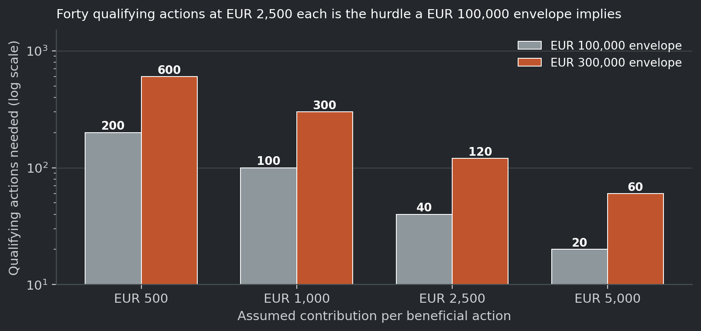
On a 100-unit baseline at €100 net with €70 of parts cost, a 5% concession applied to all 120 units after the campaign produces €3,000 of parts gross profit. The same concession applied only to the 20 additional units, with the baseline retaining its original price, produces €3,500. The €500 difference turns on the scope of the concession alone, and it assumes no demand response at all. Hypothetical arithmetic on stated inputs, not an Isuzu price, offer or forecast.
| Mechanism | Additive by construction | What it costs on a €120,000 campaign base | Verdict |
|---|---|---|---|
| Unit concession on additional-only volume against a documented baseline | Yes | 20 additional units at a 5% concession on €30 of gross profit is about €120 | Test first |
| Fixed campaign contribution paid on eligible campaign activity | No | Up to the fixed amount | Test |
| Unit concession on all campaign volume including the base | No | Five times the additional-only cost on the same volume | Do not use as standard |
| Payment per submitted record or per disclosed field | No, and it rewards disclosure | Scales with data rather than with decisions | Do not use |
| Prize or award for the largest sales total | No | Cannot be compared across business sizes | Do not use |
| Line | Proposed | Basis | What has to be demonstrated |
|---|---|---|---|
| Campaign support | €35,000 to €50,000 | 8 to 12 campaigns at €2,500 to €5,000, against the minimum-size filter | Qualifying campaigns exist, and contribution is measured on the same scope before and after |
| Dealer enablement | €15,000 to €25,000 | 25 to 40 accepted setup tasks at €600 | A documented task, an accepted deliverable, and the later eligible-use test |
| Independent evaluation | €10,000 to €15,000 | Two waves at 90 and 180 days, including returns and displacement | The result is published whether it is favourable or not |
| Total additional campaign cash | €60,000 to €90,000 | Inside the existing €100,000 route, without drawing on the engineering or assurance lines | — |
| Internal analytical preparation | Not costed here | Must be shown as internal time, not assumed free | A named owner and a stated allocation |
Proposed allocations against the mechanism in this chapter. They are a recommendation inside the existing €0 / €100,000 / €300,000 planning envelopes: not a new budget request and not an approved expenditure.
What the investment must earn, stated once. At the paper's own hurdle of €2,500 of contribution per beneficial action, the recommended €60,000 to €90,000 needs 24 to 36 qualifying actions before internal costs. The pilot will not produce that. What it will produce is the first real measurement of the qualifying rate, and that rate is the number on which any expansion should be decided.
| Decision | Recommendation | What has to be true first |
|---|---|---|
| Fund campaign support | A named line of €60,000 to €90,000 inside the existing €100,000 route, with a minimum campaign size of €150,000 of eligible billing | The campaign-selection rule is agreed and the first eligible campaign is named |
| Approach ten dealers | Yes, as designed in chapter 9: arrive with a finished own-business review and ask for a correction, not for data | A prepared review exists from data already held |
| Build first | The AIM Atlas view and the self-assessment profile | The classification release is pinned to a named file and version |
| Stage | Result | Evidence to move on |
|---|---|---|
| 1. Agree the scope and the portfolio | A clear portfolio and the written exclusion of routine services | This paper, and a presentation that says the same thing |
| 2. Pin the classification release | One named file, version and build date | Reproduce a selected family and product-form view from the pinned release |
| 3. Open two prepared views | An Atlas view and a self-assessment profile, both prepared before the first invitation | A participant completes a real task and finds it clearer than the existing review |
| 4. Run the dealer sample | Ten dealers across two markets, including one reluctant to add reporting work | Correction, useful output, total effort and reasons for non-use, all recorded |
| 5. Run the campaign line | At least two qualifying campaigns against the agreed size filter | Contribution measured on the same scope before, during and after, including returns |
| 6. Record outcomes | A case record for DLOD and for tenders, in one shared shape | Cases closing with the eight fields in chapter 6.7 filled in |
| 7. Evaluate, then extend or narrow | A stated result, favourable or not | Later evidence, effort and usefulness — not a rendered screen |
No elapsed-week estimate from any earlier roadmap is inherited as a promise. The sequence is a dependency order rather than a schedule, and stage 2 blocks stage 3.
Go if, at the pilot review, a real participant completed a real analytical task, the output was correct against its source, and the participant can name the decision it changed.
No-go if the only evidence is that a screen rendered, a file arrived, or somebody said the demonstration looked good.
It stops. If, after two eligible cycles, no participant can name a decision the tool changed, or if a confidentiality or identity weakness is found that cannot be closed, the programme stops. It does not pause, it does not add a report, and it does not broaden the participant population to look for a better sample.
And the honest test underneath all of it: if the incentive that currently produces the file were removed tomorrow, would anyone open the tool anyway?
| Observation | Basis | Source |
|---|---|---|
| Isuzu Truck UK brake-pad billing €347,389.58 (2024) to €302,366.25 (2025); quantity 4,562 to 3,402 | Full calendar years, source category | Category-mix aggregate, snapshot 19 September 2026 |
| Three selected braking categories fell €47,068.77; pads are 95.7% of it | Same period and basis | Same |
| Portugal clutch-kit billing €29,959.87 to €31,702.47 combined; genuine €2,901.92 to €2,057.86; quantity 462 to 461 | Full calendar years, source category | Same |
| Network parts billed to distributors 2025: €32,381,311.55 across 22 distributors | GPS parts billed, supplied basis | GPS distributor file, 2025 rows |
| Modelled target-spend ceiling €55,359,060; eight markets on a flat €250-per-truck placeholder holding €22,278,000 = 40.24% | Same file, 18 markets with a fleet figure | Same, recomputed 23 September 2026 |
| PMS billed €6,645,823.20 in 2025; 8.4% at least 20% under the reference price and 2.8% at least 30% | PMS lines carrying a reference price, 24 distributors | Campaign-suspect summary, 2025 |
| 519 dealer self-assessment records across 19 country lists; 514 distinct names; 334 scored, average 77.5 | Dealer network file | Dealer network file, 20 September 2026 |
| 689 notices → 619 opportunities → 199 in the queue → 45 due within 14 days → 0 outcomes | Live opportunity feed | Opportunity feed generated 22 September 2026 |
| The programme label returns 0 hits across all 538,346 billing rows of the derived file, and 5 labelled documents exist in the raw extracts | Case-insensitive text search, both layers | Derived and raw billing extracts |
| Two €30,000 documents a year apart, plus a €5,304.37 credit covering two quarters; DLAD credits of €14,421.73 and €10,273.90 | Lines read individually in the raw extracts | Raw billing extracts |
| Two rebate lines of €15,568.00 appear twice in the billing layer and once in the order layer | Repeated-row test, same distributor, date, value and entity | Rebate lines, March 2026 |
| Cordwallis: 72 trucks, 269 jobs, 1,627 lines, 147/148 fitted, 719/836/852 bought | One dealer, one year, one family | Case verification, 104 checks, 0 failures |
| €30,000 prior-year DLOD incentive on a memorandum | Document traffic on the arrangement | Programme documents |
Value fell less than volume in the Isuzu Truck UK pad line, which means mix, price and coverage deserve examination before any concession is considered. Combined genuine and Best Value grew in Portugal while the genuine line fell, which means a genuine-only view would have produced the wrong campaign. The distributors with the highest deep-discount shares are not the largest ones, which means a programme without a size floor would concentrate its spending in small markets. The dealer self-assessment asset is under-used, because two thirds of the estate holds a result the dealer cannot assemble for itself.
The dealer journey, the development record, the access model, the campaign mechanism, the funding allocations, the network-wide DLOD rollout, and the shared outcome record. None has been accepted by any participant. The DLOD rollout design and its cost are delegated by path to the companion document named in chapter 6.6, which was not on disk at the time of this build.
The quantity thresholds, the contribution figures, the hurdle table and the ceiling are arithmetic on stated inputs. They are not estimates of customer response. Where a cost is unknown it is printed as unknown; an empty cost is not zero.
| Unknown | Why it matters |
|---|---|
| The customer's reason for purchasing elsewhere | It is the question every commercial gap ultimately asks, and the billing system never recorded it |
| Whether a distributor's dealer network covers the vehicles that buy a part | Without it a coverage statement is a guess |
| The gross-profit effect of a range change before the campaign runs | The decision has to be taken before the measurement exists |
| The qualifying-campaign rate that chapter 10 needs | It is the number that decides whether expansion is warranted |
| Whether a dealer will return after the first task | It is the stopping test, and it has never been observed |
| Whether a defended job would otherwise have been lost | The reason DLOD spend cannot be read as a return |
| Whether the classification drift is 1,618 or ~2,728 part numbers | Two measurements, two dates, no pinned release |
| A per-dealer fleet, anywhere | It blocks every per-dealer rate |
| The workshop book's currency | It blocks every monetary claim from that source |
What the label DLAD stands for | Either it is the same programme under an older name or a different one, and the two answers give two different starting years for a rollout |
| Whether the €15,568 pair is one payment recorded twice or two payments | It is why no rebate total in this paper is quoted as exact to the euro |
| Whether the rebate credits' sign-off is a Japan approval in each case | It decides whether the approval path or the money is the binding constraint on a rollout |
There is no reliable measured price response in the current evidence base, and the paper does not pretend otherwise. The detail is in section 5.4, in the body rather than an appendix, because silence lets a reader assume whatever responsiveness suits the conclusion being argued. No scenario in this paper forecasts a demand response. A threshold says what would have to happen. It does not say what will.
The business owner can define the commercial question, design the information exchange, prepare analytical examples and establish what a useful output should contain. Existing classification, atlas, PRISM and self-assessment work is inspected and reused where fit for purpose rather than reproduced as parallel calculations. Specialist work is bounded: access isolation, durable shared records, reliable imports, recovery, or an agreed connection to company systems. Each is a task with an accepted deliverable and a handover.
There is no backend on this machine. There is no shared case service, no production identity and no attachment storage. The prototype deliberately refuses an authenticated identity rather than inventing authority, and says so on every result. A browser-side allowlist is not access control and is not described as one anywhere.
The access rules that matter — only the authorised distributor sees its selected accounts and terms, only the dealer sees its own permitted record, and no distributor sees another's submissions — are enforced by the operating application and by the contents of exports, not by hidden menus and filters. Until that is implemented and independently reviewed, the first shared use stays distributor-led and document-based.
And the one thing no amount of code closes is the answer. The product's value is redeemed when ISZE answers a question, and nothing in this material shows that function named, owned or funded. Software is cheap at the margin and a person's time is not. The data collection is the half that can be specified, budgeted and built; the answer is the half that needs a named person with hours in the week, and it has no home in a project budget because it is a recurring cost with no measured return attached to it. The cheap half gets built and the expensive half gets deferred, and the product arrives looking complete while the thing it was for never happens.
Universe is a commercial programme offered by ISZE to European distributors and through them to dealers. Under the European motor-vehicle block exemption framework, agreements using market-share thresholds of 30% or 40% are valid until 31 May 2028, after which the motor-vehicle-specific regime lapses unless replaced. Nothing in this paper is a legal determination, and none of it has been reviewed for competition-law compliance.
Three design rules follow and are proposed as standing constraints:
This must be reviewed by the responsible function before any shared output is used with a participant.
The recurring standard is price-free. Selling prices, resale margins, customer identities, vehicle identifiers, full inventory and workshop job cards are not silently added to it. Quantity-only data can support valuable analysis without becoming recorded resale revenue. Where a financial outcome is needed, a locally calculated aggregate may be sufficient, and an aggregate is not automatically anonymous.
Corrections have their own rule: a corrected submission replaces its declared predecessor for the affected scope, identical re-imports add no activity, annual controls are not added to monthly observations, and national controls are not added to their dealer detail.
| Term | Meaning in this paper |
|---|---|
| Parts billed | ISZE sales to the stated distributor, on the stated source basis |
| Sales to dealer | The distributor's recorded onward purchasing stage, at its own source and period |
| Recorded workshop use | A separate observation, not additive to either of the two above |
| Parts gross profit | Revenue less the documented parts purchase cost of the quantities sold; freight, duty, overheads and distributor rebates excluded |
| Gross margin | Parts gross profit divided by revenue |
| Campaign contribution | Parts gross profit less additional campaign costs not already included |
| Reference price | The applicable list reference for the stated entity and period. A reference valuation is not a transaction. |
| Deep concession | A billed price at least 20% under the reference price, on a line carrying a reference price |
| Eligible fleet | The vehicles supported by the selected application evidence. Never allocated from a national total |
| Spend per truck | A measured purchasing rate on a stated fleet basis |
| Target spend | A modelled expectation, which depends on assumptions and technical applicability |
| Progress | Project implementation, which is not a reassessment and not a commercial outcome |
| Measured / inferred / proposed / unknown | The four evidence labels used throughout this paper |
Parts billed, sales to dealer and recorded workshop use must not be added together as network revenue, and must not be subtracted to infer inventory without the stock evidence.
A quantified opportunity needs three things: the euro basis, the product family or service category, and the eligible fleet or exposure. Where the relevant population or economic basis is missing, report a descriptive observation or a proposed investigation instead of attaching a recoverable-sales value to it.
| Comparison | Required treatment |
|---|---|
| January to June against a full year | Do not describe the difference as growth or decline |
| National against dealer records | Use each at its supported level; do not invent an allocation |
| Recorded against expected service | State the technical model and the eligible population |
| Old and corrected submissions | Replace the declared scope; do not add both versions |
Keep calendar and fiscal periods distinct. Isuzu's fiscal year runs April to March, while the historical examples in this paper compare full calendar years. The 2026 billing reference runs through 30 June 2026 and is a half year. A missing month is not filled with zero. An absent transaction line may be different from a source owner confirming no activity.
| Level | What it is |
|---|---|
| Organisation | The actual commercial entity |
| Account | The source purchasing identity |
| Site | Used only where validated |
| Record | The original part and the evidence around it |
A purchasing account is not automatically a physical workshop. A dealer company can have several sites, and a source can combine them under one account.
And the identity rules that matter most in this material:
| Information | Business definition to retain |
|---|---|
| Organisation and account | The actual distributor and the supported purchasing-account identity |
| Product | The original reference; classification and relationships kept separately |
| Period and quantity | The date meaning, calendar or fiscal basis, the unit and the signed treatment |
| Coverage | Included products, channels and accounts; missing periods and wholesale scope |
| Control and correction | Comparable control totals, generation date, version and predecessor |
| Responsibility | The source owner, and the route for a definition change or a correction |
Retain identifiers as text, including any leading characters. Keep returns and adjustments distinguishable from positive activity. A revised month replaces its declared predecessor rather than becoming an additional month.
The default exchange is price-free. Already supplied definitions are reused rather than repeatedly requested.
| Term | What it means in this paper |
|---|---|
| AIM | Aftermarket Intelligence Model. Holds the parts classification: family, product group, detailed part type, product form. Its question is what was sold, in which family, at which tier. |
| Best Value parts (BVP) | A lower-cost counter-priced version of a part, sold alongside the genuine one. A pairing is a catalogue relationship, not an approval for a vehicle. |
| Billing | What ISZE invoiced the distributor. The first of the four layers in section 14.3. |
| Calendar year (CY) | January to December. The historical examples in this paper compare full calendar years. |
| Deep concession | A billed price at least 20% under the reference price, on a line carrying a reference price. |
| DLOD | Don't Lose the Deal. Isuzu Truck UK's competitive-quotation support programme: a memorandum of understanding, a rebate credit note and Japan-side sign-off. Not "Deal of the Day". |
| DLR | Dealer. |
| Fiscal year (FY) | Isuzu's financial year, April to March. FY2026 runs 1 April 2025 to 31 March 2026. |
| Genuine | The manufacturer-branded part. Not automatically the better product and not automatically the right one. |
| GPS | The modelled commercial measure of parts billed per vehicle in service, used across the workspace. A model output, not a measurement. |
| IDS | Isuzu Dealer Standards. The dealer self-assessment. Its question is what the dealer recorded about itself and what was agreed to be done about it. |
| IML | Isuzu Motors Limited, the manufacturer. Owns the part-number catalogue and the service schedules. |
| ISZE | Isuzu Motors Europe's parts and aftersales side: the party that sells to distributors. |
| ITUK | Isuzu Truck (UK) Limited, the UK commercial-vehicle distributor and the pilot market. Not to be confused with Isuzu UK, the UK pickup distributor. |
| Isuzu UK (IUK) | The UK light-commercial distributor, the pickup side. A separate entity with separate files, never combined with Isuzu Truck UK. |
| Kaizen | Continuous improvement: the action-and-follow-through side of a dealer-standards conversation. An action register, not a scorecard. |
| Parts, maintenance and service (PMS) | The parts lifecycle view: what should have been consumed against what was. A model over observed sales. |
| PRISM | The analytics codebase that produces the validated commercial calculations: parts billed, modelled expected demand, mix and replenishment signals. |
| Reference price | The applicable list reference for the stated entity and period. |
| Sales to dealer | What the distributor sold to its dealers — the wholesale stage. Not what a dealer sold to a customer, and not a word this paper uses for it. |
| Target spend per truck | A modelled expectation of what a market could spend per vehicle, which depends on assumptions. |
| UMI | One of the two Israel distributors. The Isuzu Dealer Standards Israel country pack is the UMI dealer network. |
| UTI | The other Israel distributor. It did not take part in the 2026 dealer-standards round. Never averaged or blended with UMI. |
| Source | What it is | Used here for |
|---|---|---|
| Category-mix aggregate, snapshot 19 September 2026 | Supplied aggregate by distributor and source category | The Isuzu Truck UK brake-pad and Portugal clutch-kit examples |
| GPS distributor file, 2025 rows | Parts billed, vehicles in service and modelled target spend by distributor | The denominator, the ceiling and the placeholder share |
| Campaign-suspect summary, 2025 | PMS lines carrying a reference price, by distributor and by family | The deep-concession picture |
| Dealer network file, 20 September 2026 | 519 dealer self-assessment records across 19 country lists | The dealer score distribution and the per-dealer arithmetic |
| Opportunity feed, 22 September 2026 | 619 opportunities and 689 notices with source and observation dates | The tender funnel |
| Billing source manifest | The invoice-line structure: 538,346 rows, 12 columns | The programme-label search |
| Case verification, 104 checks, 0 failures | Independent re-derivation of the Cordwallis case | The worked dealer case |
| Programme documents | Memorandum of understanding, rebate credit note, sign-off traffic | The DLOD description and the €30,000 prior-year figure |
| Business-owner scope instruction, 22 September 2026 | Distinctive commercial tools, with ordinary availability and routine support outside the programme | The scope boundary |
| White paper v1.0, 21 September 2026 | The first full paper | Analytical rules, glossary, acceptance tests, field groups |
| Commercial Tools Edition, 22 September 2026 (withdrawn) | 33 pages | The scope boundary paragraph |
| Commercial Vision 3.0, 22 September 2026 (withdrawn) | 80 pages | The tender framework, the self-assessment chapter, the participation scores |
| Product paper v0.5, 22 September 2026 | The product and operating paper | The surface rule, the suppression list, the go/no-go and the stop condition |
| This edition, 23 September 2026 | New proposals | The five-pillar organisation, the internal register, the network-wide DLOD framing, the two-pass index |
| Raw billing extracts, read 23 September 2026 | cy2023_2024.csv, cy2026_q1.csv, order_headers_from_Order_Detail.csv | The five labelled DLOD / DLAD documents, read line by line |
| DLOD network rollout, 23 September 2026 | The costed design for running the programme across the network | The affordability figures, the three routes, the eight-field record and the sign-off constraint |
Revision record. This paper supersedes ISUZU_UNIVERSE_WHITE_PAPER_2026-09-21.pdf (58 pages), ISUZU_UNIVERSE_WHITE_PAPER_VISUAL_EDITION_2026-09-21.pdf (71 pages), ISUZU_UNIVERSE_COMMERCIAL_VISION_3_0.pdf (80 pages, withdrawn), ISUZU_UNIVERSE_COMMERCIAL_TOOLS_WHITE_PAPER.pdf (33 pages, withdrawn) and Universe_Yellow_Paper_v0.5_2026-09-22.pdf as a statement of the programme, while keeping every one of them on disk for reference. The current 25-page paper ISUZU_UNIVERSE_3_0_2026-09-23.pdf and its annex remain the live commercial and participation papers and are not superseded by this one; this paper is the longer evidence-led companion written for internal use.
The visual edition's rendering is not reused anywhere. That edition prints each of its ten diagrams twice over itself, which its own review diagnosed as an assembly fault at the point where the figures were added. Every figure in this paper is regenerated from source by _build_white\figures_white.py at build time, and no image from the visual edition appears here.
One evidence correction applied after the first draft. The DLOD pillar was rewritten on 23 September 2026 after the source lines were read directly. The brief behind this paper said a search for the programme label across the billing ledger returned nothing; that reproduces in the derived billing file, but the label survives in the raw billing extracts, because the derived file drops the free-text reference column that holds it. The pillar now states that, and the substantive limit is unchanged: five labelled payments across three years and zero cases recorded. The full correction is recorded in the working file beside this one.
Internal draft for the business owner. Prepared 23 September 2026. Not for circulation.